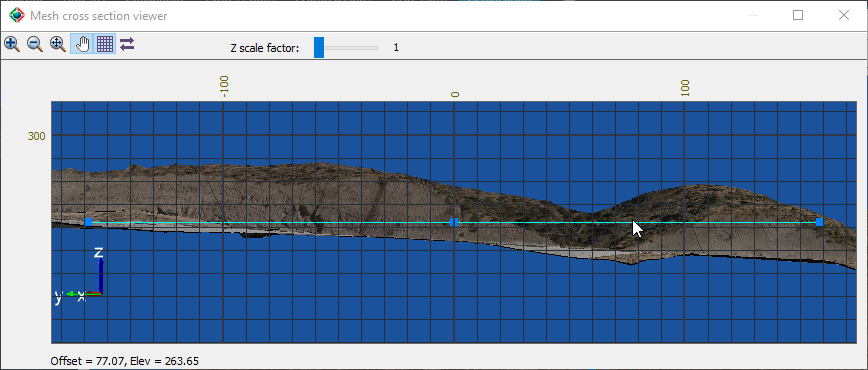
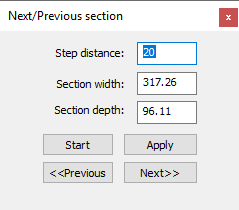

|
|
Toolbar:
Menu: CAD-Earth > Mesh commands > Mesh Viewer
|
|
|
Command line: CE_MESHVIEWER Mesh Viewer toolbar: CAD-Earth version: Premium. |
.png)
.png)
.png)
Command description:
After defining a rectangle selecting points directly on the surface the Cross Section Mesh Viewer will be displayed, where you can inspect the corresponding section in orthographic view. If you modify the rectangle extension, position, or rotation the section view and the grid information will be updated automatically. You can zoom-in or out, pan the view, show/hide the grid and move the view forward or backward specifying an stepping distance, and modify the Z scale factor to view more detail. The offset distance from the section center and the elevation at the current cursor position will be shown in the bottom left corner of the viewer.

Mesh cross section viewer
Dialog box settings:
|
Increase zoom. |
|
|
Decrease zoom. |
|
|
Zoom extents. |
|
|
Pan view. |
|
|
Show/hide grid. |
|
|
Next/previous section. A dialog box will be shown where you can specify the stepping distance, the section width and depth. You can get back at the original section view and apply the data to update the section view. Press the previous or next button to move the view backward of forward. |

Next/Previous section dialog box
Tips:
•You can move the mouse wheel to zoom-in or out also.
•If you drag one of the corner grips, the rectangle extents will be updated. Dragging the center grip will move the rectangle to another position. To modify the rectangle rotation, drag the triangular grip.
•You don't have to close the cross section viewer to drag the rectangle grips.
•When you close the cross section viewer, the rectangle will disappear.
Copyright © 2023 Arqcom Software
Google Earth© is a registered trademark of Google inc. All other trademarks are the property of their respective owners.